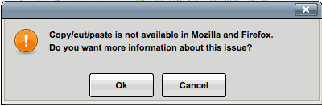
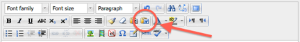

Copy and Paste in Firefox Won't Work
When attempting to copy and paste text from Word, or other similar word processing software, you may get an error as you paste the text into your assignment within the Firefox browser (error message image example is below). There is an easy workaround by using keyboard shortcuts rather than mouse clicks.

1. Error Message
Click the image to the right to see the error message that appears if using the mouse to paste text into an assignment textbox.
2. To "copy"
On a Mac: Press the Command and "C" keys
simultaneously.
On a PC: Press the Control and "C" keys simultaneously.
3. To "paste"
On a Mac: Press the Command and "V" keys
simultaneously.
On a PC: Press the Control and "V" keys simultaneously.

4. Another option:
Another option available to paste text from Microsoft Word into an assignment text box is to click the small clipboard icon with the "W" (Word) logo in the editing icons of the textbox. A popup window will open with a textbox to paste the text into (use either mouse clicks or Command/Control "V" here). Click "Insert" to insert the text into the assignment textbox.